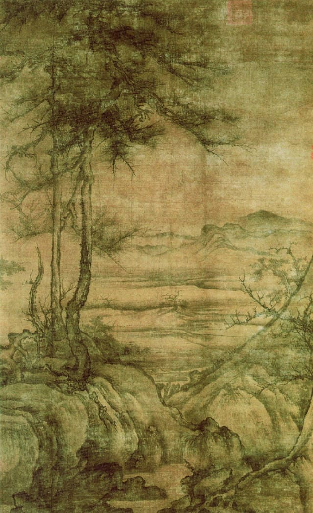

李成《寒林平野图》

《寒林平野图》是五代宋初画家李成创作的一幅绢本精品画作，图绘萧瑟的隆冬平野中，长松亭立，古柏苍虬， 枝干交柯，老根盘结，河道曲折，似冰冻凝固，烟霭空蒙而至天际。该图正是李成最擅长表现的场景。
《寒林平野图》是五代宋初画家李成创作的一幅绢本精品画作，图绘萧瑟的隆冬平野中，长松亭立，古柏苍虬， 枝干交柯，老根盘结，河道曲折，似冰冻凝固，烟霭空蒙而至天际。该图正是李成最擅长表现的场景。
该图主体部分为巍峨高耸的山体，高山仰止，壮气夺人。山顶丛林茂盛，山谷深处一瀑如线，飞流百丈。山峰下巨岩突兀，林木挺直。 画面前景溪水奔流，山径上一队运载货物的商旅缘溪行进，为幽静的山林增添了生气。
《溪山楼观图》是一件立轴作品，代表北宋初全景式山水的典型。此图绘高远、深远景色，溪山重叠，自下而上，自近及远，繁复细密。 在险峻的峰峦之中，显现出雄伟壮观的楼观殿宇，山崖下水榭回廊与水波浩渺的江面互相映衬，加上陡峭的山势与艰险的山径， 使此画的境界雄浑沉秀，繁中见清。笔法尖劲峭丽，山石皴中有染，精细工整，是“燕家景致”的典型范例。
画面中的树木都没有茂密的枝叶，而那种“有枝无干”的树木，也是郭熙画风的一个标志。至于那被描绘为蟹爪一般的树枝，更是郭熙画派的经典象征。 山体坡脚处则施以卷云皴，层层交叠，体现了山石的厚重稳健之姿。山势虽在画面中部被云雾隔断，却丝毫不掩其硬气，从近山看去，山脊挺立而分明， 予人坦身露体、直面苍天之感。
《春山瑞松图》描绘的是云烟涌动的山林景色，画中山石树木的造型秀稚温和，山石以“米点皴”法画出，清峻柔丽，使景物开阔、平静而凄迷，显示出春日润湿而有生趣的意境。
《千里江山图》卷是北宋画家王希孟传世的唯一作品。此图描绘了祖国的锦绣河山。画面上峰峦起伏绵延，江河烟波浩淼，气象万千，壮丽恢弘。 山间高崖飞瀑，曲径通幽，房舍屋宇点缀其间，绿柳红花，长松修竹，景色秀丽。山水间野渡渔村、水榭楼台、茅屋草舍、水磨长桥各依地势、环境而设， 与山川湖泊相辉映。此卷以概括精练的手法、绚丽的色彩和工细的笔致表现出祖国山河的雄伟壮观，一向被视为宋代青绿山水中的巨制杰构。
此图为青绿设色。画中有青山碧水、殿宇村舍，栈道、桥梁穿插其间，又有苍松翠柏，茂林修竹，移步换景，令人玩味不尽。山石用小斧劈皴法， 再施以青绿重色；树木、建筑刻画细腻精谨，点景人物描绘细致入微。整幅作品布局宏大，细节丰富，色彩浓丽而不失清雅，刻画精细而不琐碎， 带有宋代画院气派。
李唐《江山秋色图》
此图立意于表现士绅官僚优裕闲适的生活，画家的注意力从山川自然的野韵转移到人工营造修饰的景物，这种题材风格的转变， 从侧面反映出南宋时期，一大批无心复国的官僚们，专注于享乐的生活态度。正如诗云：“暖风薰得游人醉，只把杭州作汴州”。
画家以轻快流畅的笔法，画出水波的跳动，浪峰无规则的排列，显然受到乱风的吹荡，即使画家不染上红色，也使观者感到阳光明媚，不由得想起“湖光潋滟晴偏好”的杭州西湖景象来。
图中绘清朗的月夜，数人乘一叶扁舟畅游湖上，微风徐拂，月明如镜，水天一色，在一派澄净中，只有溪流与松风的和奏飘荡在水面上。